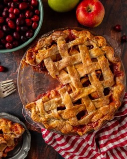

Apple Pie

Ingredients
- 2 1/4 lbs Granny Smith Apples, peeled, cored, and thinly sliced (7 cups)
- 1 1/2 tsp cinnamon
- 8 Tbsp unsalted butter
- 3 Tbsp all-purpose flour
- 1/4 cup water
- 1 cup granulated sugar
- 1 egg, beaten with 1 Tbsp water, for egg wash
- 1 recipe for double pie crust (Refer to specific recipe)
Instructions
- Prepare the pie crust as per the recipe and chill while preparing the filling. Preheat oven to 425˚F.
- Melt butter in a saucepan over medium heat. Whisk in flour and simmer for 1 minute. Add water and sugar, bring to a boil, then simmer for 3 minutes.
- Place sliced apples in a large bowl, sprinkle with cinnamon, and coat with the sauce.
- Roll out the bottom crust to a 12" circle and transfer to a 9" pie plate. Add apple mixture.
- Roll out the second crust, cut into strips, and create a lattice over the filling. Brush with egg wash.
- Bake at 425˚F for 15 minutes. Reduce heat to 350˚F and bake for another 45 minutes.
- Let the pie rest at room temperature for 1 hour before serving.